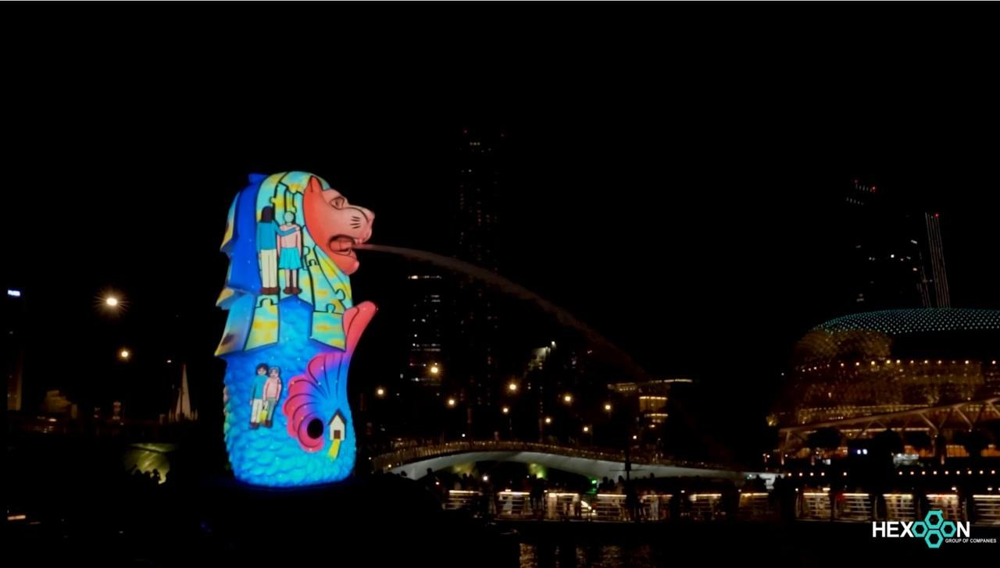
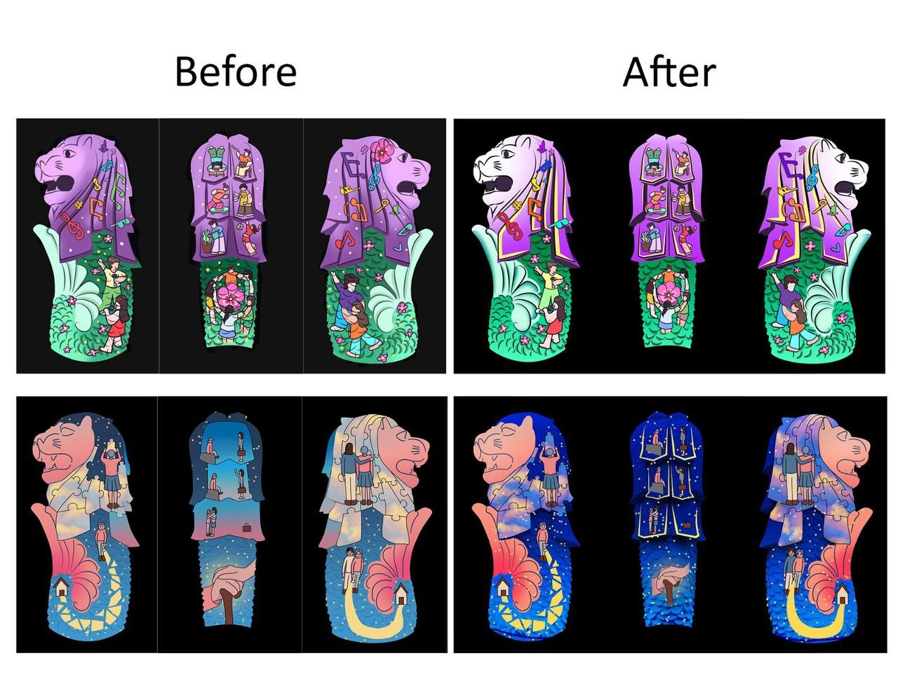
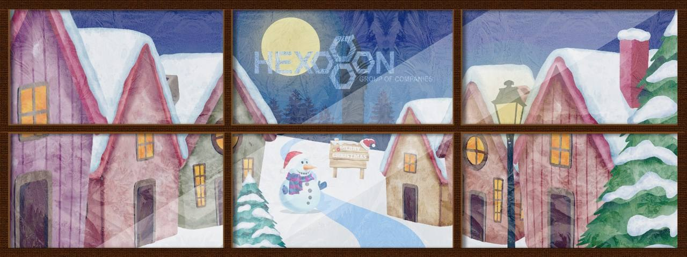
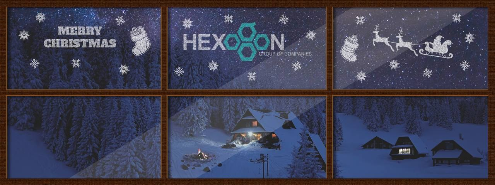

Event Visuals – Multimedia Internship at Hexogon

- Role
- Multimedia intern
- Events
- Singapore Countdown 2023–2024 (Marina Bay); Hexogon Christmas event
- Tools
- Adobe After Effects, Photoshop, Illustrator, Premiere Pro
- Output
- Projection animations for two live events (stills shown; original videos not available)
Projecting onto the Merlion
For the Singapore Countdown, illustrated artwork was projected onto the Merlion at Marina Bay. Artwork that looks right on a flat screen does not automatically work on a curved stone statue at night, viewed from across the bay.

Comparing the two versions:
- Panels were reshaped to follow the Merlion’s mane and body, with outlines that catch the light and give the flat drawing depth on a 3D surface.
- Colours were pushed brighter and deeper, because projected light on stone washes out and an audience sees it from a distance.
- Details sized for a screen were simplified or enlarged so they stay readable from the waterfront.
I animated the artwork for projection, adapting each illustration to the Merlion’s surface. The images on this page are stills from the animation.
Christmas window displays
For Hexogon’s Christmas event, I produced two projection animations for a six-panel window, framed like a winter window looking out on a snowy scene. The images below are stills from the animations.


Both designs place the company logo in the top-centre panel, and a diagonal light sheen runs across all six panels so they read as one window rather than six separate images. Each design treats the frame differently: the village is illustrated and warm, the forest is photographic and calm, giving the client two distinct directions to choose from.
What I learned
- Design for the medium, not the artboard. Projection, distance and a curved surface all changed what “finished” meant.
- Client work comes with fixed deadlines that don’t move; delivering several pieces on time while keeping quality consistent was a skill in itself.
- Offering two clearly different directions makes client decisions faster than offering small variations of one idea.
- Keep copies of your own work. Both animations ran live, and the final videos stayed with the client. Now I save a copy of every finished piece for my portfolio, with permission.